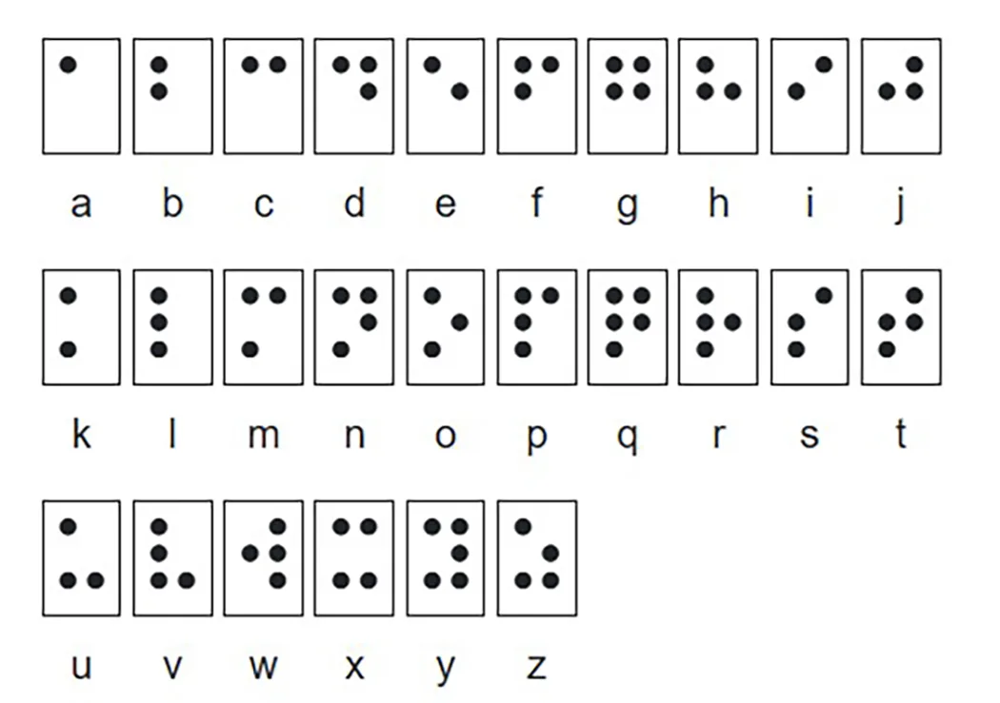

PutBoard
Current Word:

Current Word:
Braille is a tactile writing system made of raised dot patterns that allow blind and low-vision individuals to read and write through touch instead of sight.
NVDA is a free, open-source screen reader for Microsoft Windows. It helps blind and low-vision individuals access computers and screens through speech output.
With a mission to make technology accessible to everyone, NVDA supports multiple languages and is compatible with various applications.
Download NVDAJAWS (Job Access With Speech) is a powerful screen reader for Windows that converts on-screen text and controls into speech and Braille.
It enables blind and visually impaired users to navigate computers independently by vocalizing screen content and displaying Braille output.
Note: This is a paid service, but offers a free trial.
Try JAWS FreeYou could use magnification tools, which are usually already downloaded on a device, so you usually look in the settings. These tools help enlarge text and images for better visibility.
A smart assistant could also help individuals with disabilities through voice commands and AI assistance.
One of the devices on the market that could help people with disabilities, as it has vocal commands, so you can simply ask it questions or resources you may need. As simple as saying "Alexa, can you tell me the weather today?" These are useful for individuals who need them.
You are able to use your vocal commands as there is a microphone tool that you could click on, and also AI bots that could also help with that too.